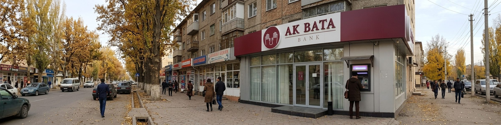
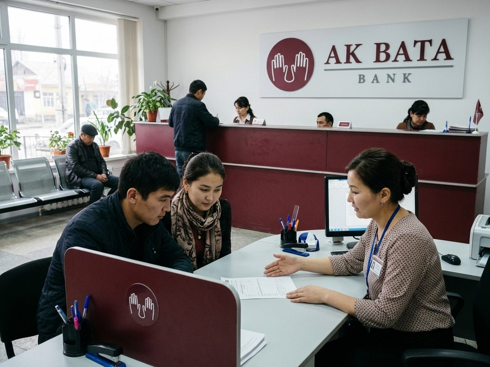
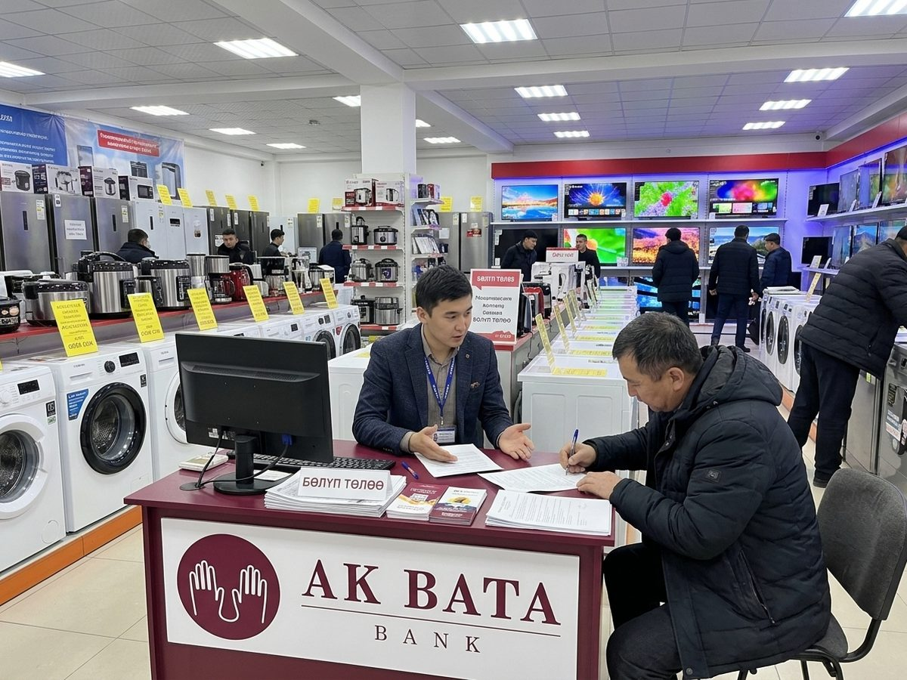
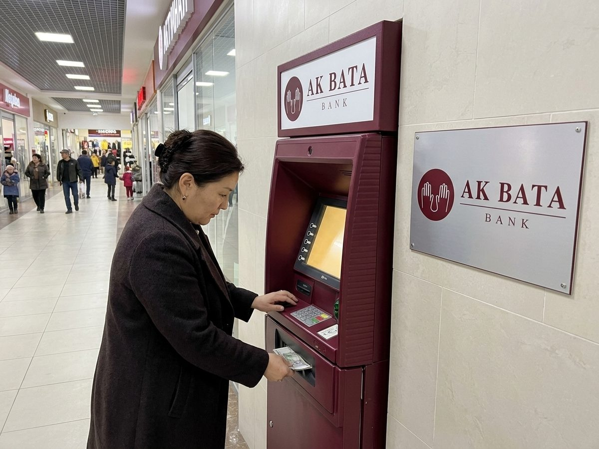

Ak Bata Bank
Рассрочка на телефоны и технику в магазинах «Сигнал»: оформление за 15 минут по ID-карте.
♥ 45 · Comment · Share
Ak bata: a blessing on your plans.
In Signal shops, 15 minutes
Рассрочка на телефоны и технику в магазинах «Сигнал»: оформление за 15 минут по ID-карте.
♥ 45 · Comment · ShareIn Signal shops, 15 minutes
Ak Bata Bank ✓Ак Бата БанкAk Bata Bank ✓Ак Бата БанкAk Bata Bank ✓Ак Бата БанкAk Bata Bank ✓Ак Бата БанкAk Bata Bank ✓Ак Бата БанкAk Bata Bank ✓Ак Бата БанкAk Bata Bank ✓Ак Бата БанкAk Bata Bank ✓Ак Бата БанкAk Bata Bank ✓Ак Бата БанкAk Bata Bank ✓Ак Бата БанкAk Bata Bank ✓Ак Бата БанкAk Bata Bank ✓Ак Бата БанкAk Bata Bank ✓Ак Бата БанкAk Bata Bank ✓Ак Бата БанкAk Bata Bank ✓Ак Бата БанкAk Bata Bank ✓Ак Бата БанкAk Bata Bank ✓Ак Бата БанкAk Bata Bank ✓Ак Бата БанкAk Bata Bank ✓Ак Бата БанкAk Bata Bank ✓Ак Бата БанкAk Bata Bank ✓Ак Бата БанкAk Bata Bank ✓Ак Бата БанкAk Bata Bank ✓Ак Бата БанкAk Bata Bank ✓Ак Бата БанкAk Bata Bank ✓Ак Бата БанкAk Bata Bank ✓Ак Бата БанкAk Bata Bank ✓Ак Бата БанкAk Bata Bank ✓Ак Бата БанкAk Bata Bank ✓Ак Бата БанкAk Bata Bank ✓Ак Бата БанкAk Bata Bank ✓Ак Бата БанкAk Bata Bank ✓Ак Бата БанкAk Bata Bank ✓Ак Бата БанкAk Bata Bank ✓Ак Бата БанкAk Bata Bank ✓Ак Бата БанкAk Bata Bank ✓Ак Бата БанкAk Bata Bank ✓Ак Бата БанкAk Bata Bank ✓Ак Бата БанкAk Bata Bank ✓Ак Бата БанкAk Bata Bank ✓Ак Бата БанкAk Bata Bank ✓Ак Бата БанкAk Bata Bank ✓Ак Бата БанкAk Bata Bank ✓Ак Бата БанкРассрочка на телефоны и технику в магазинах «Сигнал»: оформление за 15 минут по ID-карте.
♥ 45 · Comment · ShareAk Bata Bank, since 1995. Accounts, cards, transfers and instalment loans for phones and appliances.
Банк «Ак Бата» с 1995 года. Счета, карты, переводы, рассрочка на технику.
48 locations on Kartalar: Talas 24, Nurzhan 15, Iyık Janyl 4, Bazar-Korgon 3, Tash-Kömür 1, Kyzyl-Adyr 1.

In the branch
Phones in instalments
The cash machineNo reviews yet.